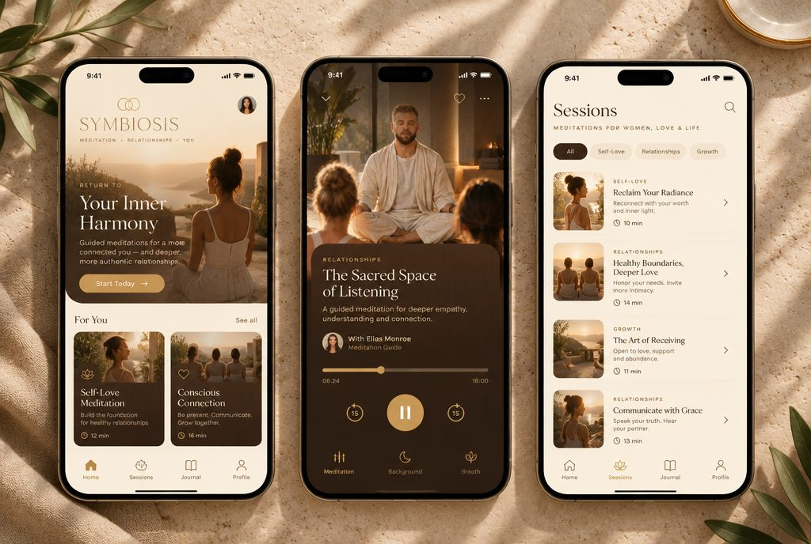
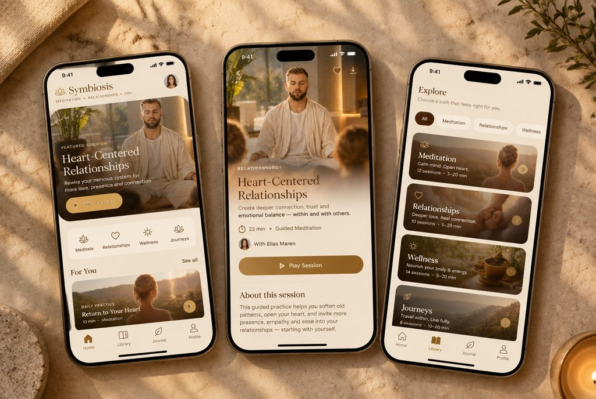
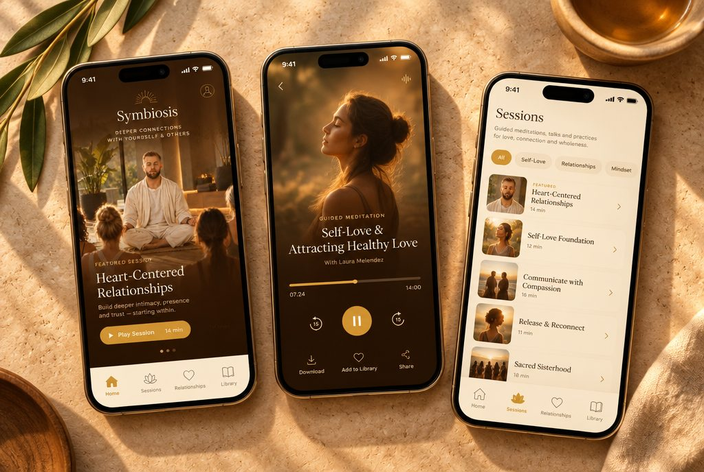
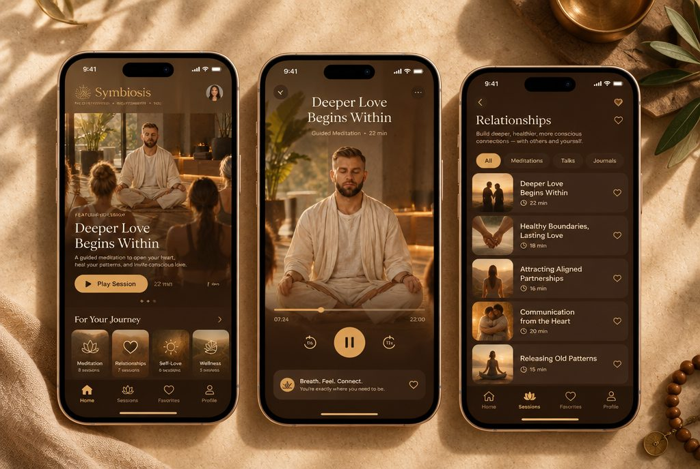
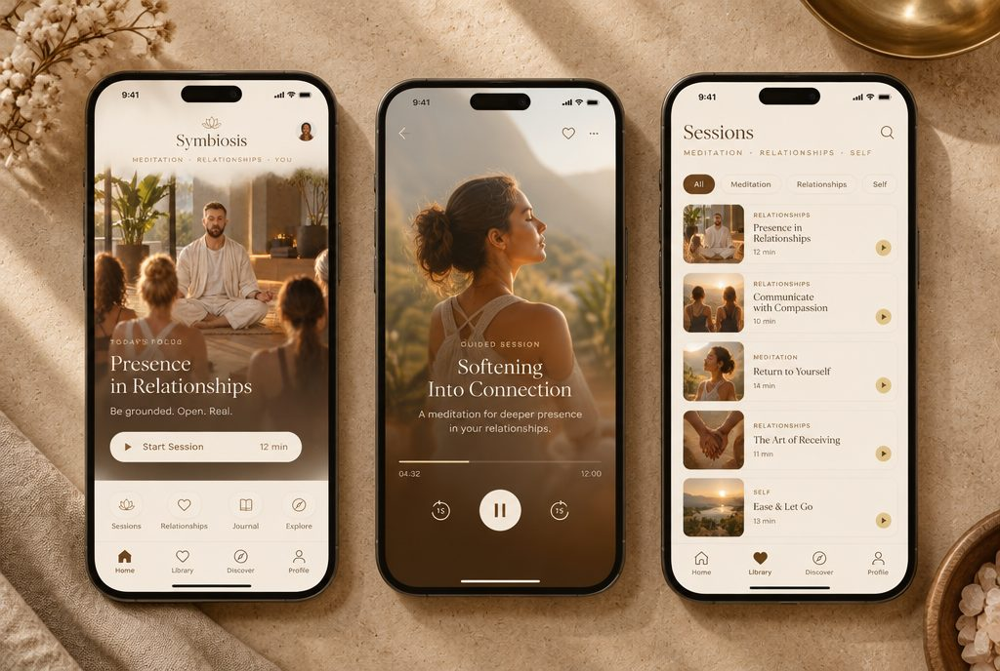
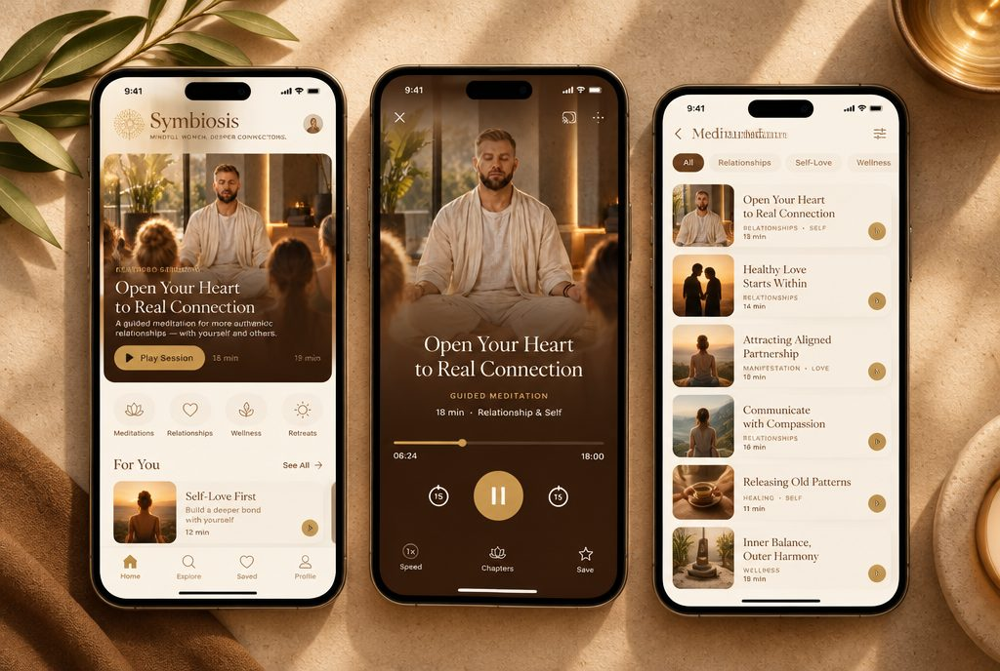
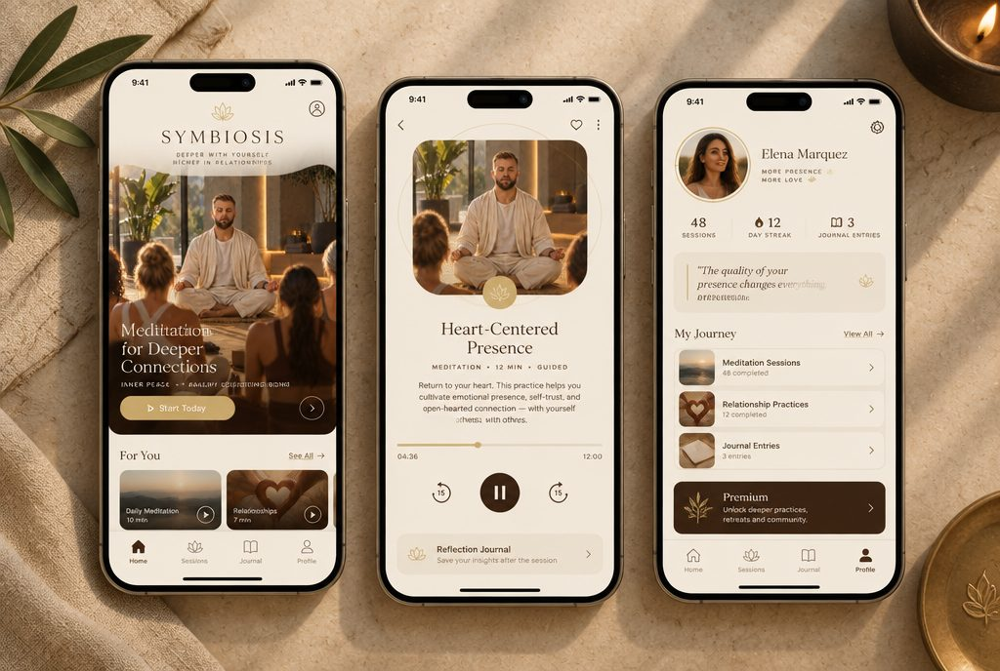
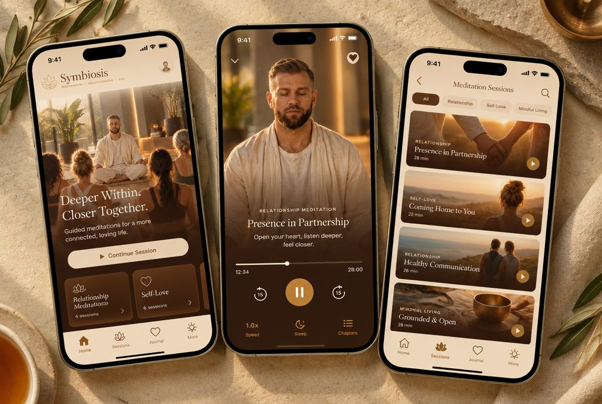
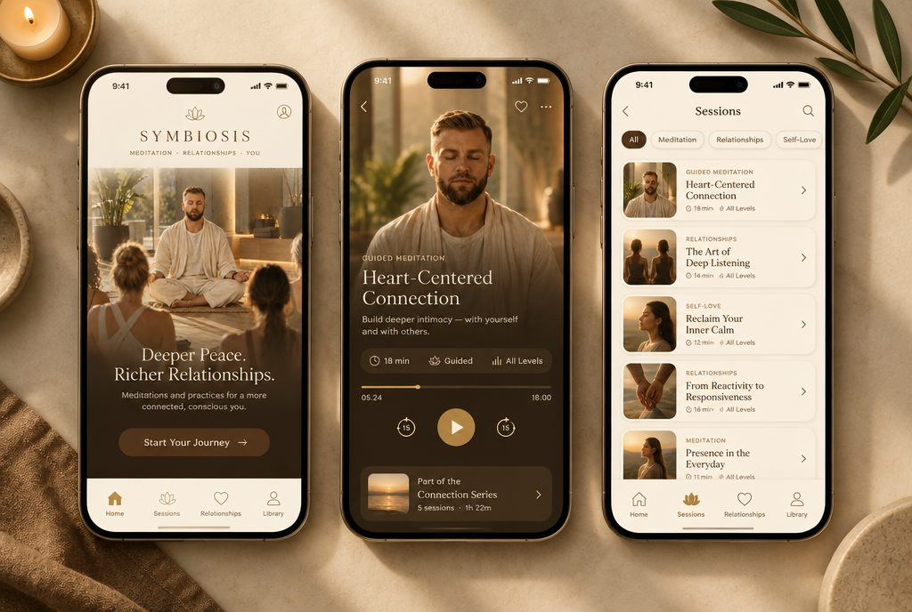

Иммерсия · симбиоз «Золотой час» + «Орех и песок»
10 оттенков
Соединил два твоих фаворита — тёплый «золотой час» (крем/песок/золото) и «орех и песок» (тёмный орех в карточках) — и поиграл оттенками. От светлого баланса до более тёмного ореха.

1 — крем + светлый орех, мягкое золото (баланс).
2 — глубже песок, насыщенный орех, медовое золото.
3 — сильное золотое свечение, ореховый герой, янтарь.4 — светлее айвори, эспрессо-ореховое меню, шампань.
5 — карамель-песок, богатый орех, бронза.
6 — тёплый овёс, какао-орех, бледное золото.
7 — крем, каштаново-коричневые карточки, антик-золото (контрастнее).
8 — медово-кремовый, тёмный орех, приглушённое старое золото.
9 — песок, орех с ноткой терракоты, мягкое золото.
10 — тёплый грейж-крем, ореховые карточки, свечное золото.